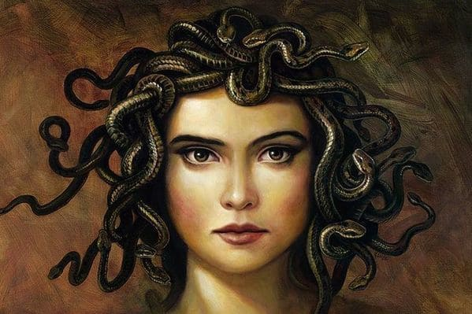
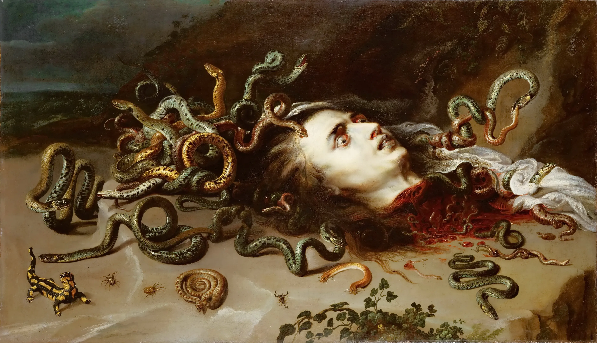

Medusa es uno de los personajes de la mitología griega más fáciles de reconocer a simple vista. Con su inconfundible cabello de serpientes y el poder de convertir a quien la mire en piedra, es uno de los monstruos más populares en las historias de la antigüedad. Pero hay una parte de su historia que no todos conocen y que cambiará tu perspectiva por completo.
Muchos(as) hemos escuchado el mito de Medusa y cómo ésta convertía en piedra a quienes la veían a los ojos, sin embargo pocos(as) conocemos a profundidad el desarrollo del mito y aún menos saben que existen varias versiones del mismo. El presente artículo tiene como finalidad dar a conocer una de esas versiones y traer su caso a la sociedad actual para hacer un análisis desde la perspectiva de género sobre cómo se trata a la mujer que cae en la seducción o es catalogada como seductora.

Medusa es una figura de la mitología griega, la única mortal de las tres Gorgonas, junto con sus hermanas inmortales, Esteno y Euríale. Las tres Gorgonas nacieron del dios del mar de los peligros de las profundidades ocultas, Forcys, y de la diosa de los monstruos marinos y de los peligros del mar, Ceto.
La Enciclopedia de Historia Antigua cita a Ovidio de forma breve, pero impactante. Medusa era una hermosa joven y Poseidón la deseó para él. El dios de los mares la atacó y la violó dentro de un templo dedicado a Atenea. La diosa tomó este ataque como una ofensa y castigó a la mujer dándole serpientes en lugar de cabello y con la maldición de convertir en piedra a quien mirase.
Medusa es más conocida por la historia de su muerte, provocada por el héroe Perseo, que la decapitó con la ayuda de los dioses Hermes y Atenea. La versión más antigua de la muerte de Medusa es la de la Teogonía de Hesíodo, que detalla su decapitación y describe a sus hijos Pegaso, el caballo alado, y el gran Crisáor, que surgió de su cuello. Las menciones a la cabeza de la Gorgona en la Ilíada y la Odisea de Homero, que originalmente formaban parte de la tradición oral griega antes de ser puestas por escrito en algún momento del siglo VIII a.C., insinúan una larga historia del complejo carácter de la Gorgona Medusa.
Perseo y Medusa
Medusa es más conocida por su muerte a manos de Perseo, y Pseudo-Apolodoro relata la historia con todo detalle. Según él, Perseo era el hijo de Zeus, que tomó la forma de una lluvia de oro, y Danaë, a quien había encerrado su padre Acrisio después de que un oráculo le dijera que sería asesinado por el hijo de Danaë. Cuando Acrisio se enteró de que Perseo había nacido y era hijo del rey de los dioses, metió a Dánae y a su hijo Perseo en un cofre y lo arrojó al mar. El cofre llegó a la isla de Serifos y Perseo fue criado por Dictys, el hermano de Polidectes, el rey de Serifos. Polidectes se enamoró de Dánae, pero Perseo era muy protector con su madre, por lo que el rey elaboró un plan para engañar a Perseo. Reunió a su pueblo en un banquete con el pretexto de recoger contribuciones para el matrimonio de Hipodamia, que domaba caballos. Cuando Perseo llegó sin caballos como regalo, tal y como le había pedido Polidectes, este le pidió que recuperara para él la cabeza de Medusa, la única Gorgona mortal, con la esperanza de que no tuviera éxito.
Perseo fue guiado por el dios Hermes y la diosa Atenea en su viaje. Se dice que Atenea ayudó a matar a Medusa porque la muchacha había estado dispuesta a que su belleza fuera comparada con la de Atenea. Unas ninfas le dieron al héroe unas sandalias aladas, un saco conocido como kibisis para guardar la cabeza de la Gorgona y el gorro de invisibilidad de Hades. Además, Hermes le había dado una hoz de adamantina. Perseo llegó a la casa de las Gorgonas mientras estas dormían. Mientras estaba junto a las criaturas dormidas, Atenea guió la mano de Perseo mientras miraba el reflejo de un escudo de bronce para no ser convertido en piedra por la mirada de las Gorgonas si se despertaban, y cortó la cabeza de Medusa con la hoz. De su cabeza cortada surgieron Pegaso, el caballo alado, y Crisáor. Perseo colocó la cabeza de Medusa en su kibisis, pero cuando se marchaba, las dos Gorgonas restantes se despertaron e intentaron perseguirlo. Sin embargo, como llevaba el gorro invisible, no lo pudieron ver.

La cabeza de Medusa
Tras matar a Medusa, Perseo utiliza su cabeza varias veces. Algunas versiones de la historia de Aridane, Teseo y Dionisio dicen que Ariadna fue asesinada por Artemisa, y otras dicen que fue convertida accidentalmente en piedra por Perseo después de que Dionisio le hiciera la guerra. Otro uso de la cabeza de Medusa fue para salvar a Andrómeda, que había sido atada a una roca como ofrenda al monstruo marino Ketos. Su madre había afirmado que era más bella que las nereidas, que se enfurecieron al oírlo y pusieron a Poseidón, el dios del mar, de su parte. La única manera de detener las inundaciones del dios del mar y del monstruo marino era entregar a Andrómeda. Perseo se enamoró de ella en cuanto la vio; mató al monstruo marino y la liberó. El único problema era que Andrómeda ya estaba comprometida para casarse con su tío Fineo. Perseo acabó con Fineo convirtiéndolo en piedra con la cabeza de Medusa. Cuando Perseo regresó a la isla de Serifos, convirtió a Polidectes y a su gente en piedra con la cabeza de la Gorgona y nombró rey a Dictys. Luego entregó la cabeza de Medusa a Atenea, que la colocó en el centro de su escudo, conocido como égida, para aterrorizar a sus enemigos.
¿Cuál es la historia de Medusa?
La historia más conocida de Medusa procede del poeta romano Ovidio. Medusa fue seducida por Neptuno (Poseidón) en un templo de Minerva (Atenea), y en venganza, Minerva convirtió la hermosa cabellera de Medusa en serpientes. Como era mortal y tenía la capacidad de convertir a los hombres en piedra, Perseo fue enviado a cortarle la cabeza. De su cuello surgieron Pegaso y Crisáor. En los relatos griegos, su cabeza fue colocada en la égida de Atenea.
¿Medusa es mala o buena?
No hay historias que cuenten que Medusa convierta a la gente en piedra, ni que acose o mate a la gente (a diferencia de otros monstruos griegos como Escila y Caribdis). Aunque tenía el poder de matar, no era intrínsecamente mala.
¿Qué hizo Medusa para que la mataran?
Medusa era la única mortal de las tres Gorgonas, ya que sus hermanas Esteno y Euríale eran inmortales. Su cabeza era el premio de Perseo porque era la única que podía morir.